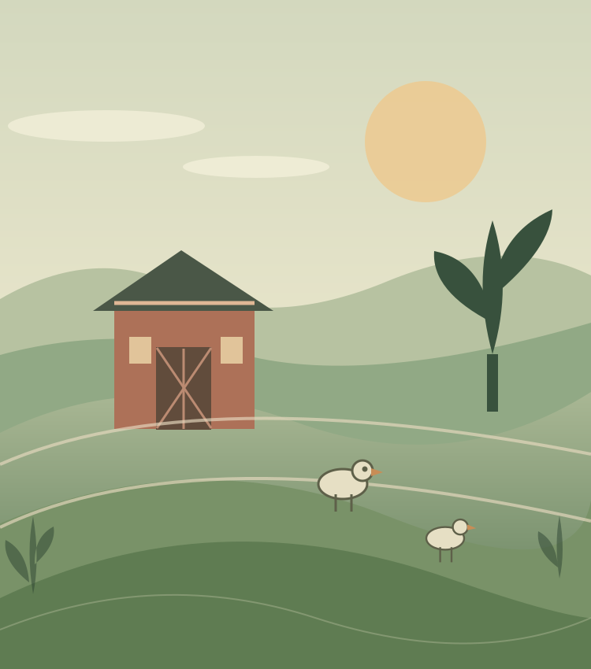

Time outdoors
Our poultry is raised in pasture-based pens, with access to sunshine, fresh air, and outdoor surroundings.
Whole processed chickens raised on pasture, direct conversations about availability, and stories from everyday farm life. Explore our poultry, send us a question, or follow along in our Farm Journal.

Meet Backyard Farm
Backyard Farm is built around a straightforward idea: raise animals thoughtfully and make it easier for neighbors to know where their food comes from.
We are a small farm focused on pasture-raised poultry. Our work is hands-on, our approach is intentional, and our commitment is to care for the land and the animals entrusted to us.
Say helloThe Backyard Farm way
We prioritize everyday practices that reflect our values—not shortcuts.
Our poultry is raised in pasture-based pens, with access to sunshine, fresh air, and outdoor surroundings.
We take an active role in caring for our birds throughout the growing process, with attention to their well-being.
We favor a personal, hands-on approach and aim to treat every part of the process with care and respect.
Have questions about feed, husbandry, processing, or availability? We'd love to hear from you.
What we offer
Our current focus is whole processed chickens. Contact us directly to ask about upcoming availability, pricing, and pickup arrangements.

Pasture-raised birds, cared for in outdoor pens and processed with a hands-on approach. Email us to inquire about upcoming batches, pricing, processing details, and pickup.
Read the stories behind our approach and follow along as we share poultry-raising information and farm news.
Visit the journal →Availability and prices are confirmed by email. This website does not accept orders, deposits, or payments.
Simple and personal
No online checkout or reservations. Just a straightforward conversation with the people raising your food.
Learn how we raise our whole chickens and what to ask before purchasing.
Email us to ask about the next available batch, pricing, and pickup.
We reply personally with the current details; nothing is ordered until we agree directly.
The farm journal
Our journal is a place for practical notes, everyday observations, and news about what is happening at the farm.
What you can expect here: thoughtful notes about raising chickens, information about our approach, and occasional updates on upcoming availability.
Read the journalGet in touch
Ask about whole processed chickens, pricing, upcoming availability, or pickup arrangements. You can also request occasional farm email updates. We respond personally by email.